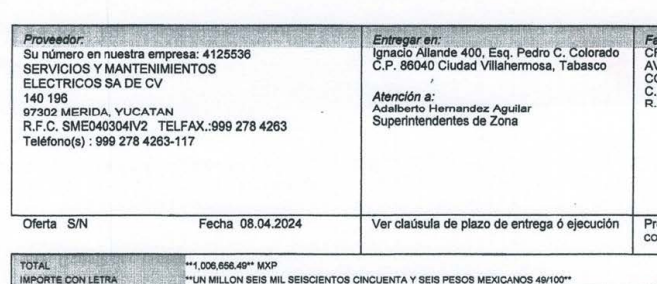

Jaula
Ejercicios básicos de hidratación, en un punto geográfico y existencialismo regional.
La situación delictiva en la región ha sacudido las operaciones de los empresarios resultando en modificación de horarios, nómina, bajos consumos y muchos llegando al cierre parcial o total de algunos locales .
Por las noches un empresario afectado y un publicista procuran reunirse en una zona segura de la ciudadad para analizar la afluencia en los negocios y en la ciudad en general.
Este documento es una recopilación de esos análisis.
Día 3
Agenda: 2 x 6 pack
-
Esponja
Rol esponjo con crepas y gente
-
Gente
Un apagón masivo dejó sin energía eléctrica a cientos de miles de usuarios en los estados de Campeche, Quintana Roo, Tabasco y Yucatán la tarde de este lunes 24 de marzo, tras una falla en el suministro de gas natural que alimenta a las centrales generadoras de electricidad.
-
Gente
Tiempo crítico hace 1 semana
El argumento es que se robaron el cobre de las líneas. – Dicen que a nosotros nos energiza la subestación que está detrás del Parque Dora María, pero de las cuatro líneas sólo estaban funcionando tres.
Hoy tenían reuniones con directivos de la CFE, pero estos cancelaron su participación.
El crecimiento natural de la ciudad es para esa zona. Ahí hay más de mil hectáreas con posibilidad de ser urbanizadas. Ahorita no sólo es la energía eléctrica, también la infraestructura vial. No echemos a perder el desarrollo ordenado. CFE debe poner su parte, el Ayuntamiento y el Gobierno del Estado deben poner su parte. - ¿Y se requiere una subestación en la zona? La CFE nos dijo que la subestación está sobrada. RESIDENTES Y XEVT
-
Gente
El superintendente de la zona de distribución Villahermosa, en Tabasco, es Adalberto Hernández Aguilar. Actualmente, la CFE lo identifica como tal en sus documentos, El Ing. Luis Manuel Hernandez Vaquerizo, en su carácter de Superintendente de la Zona de Distribución Villahermosa.
